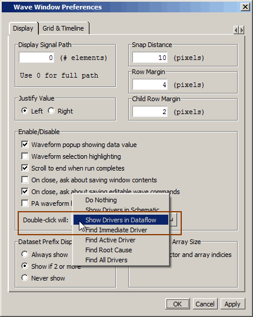
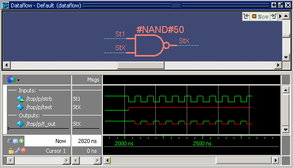
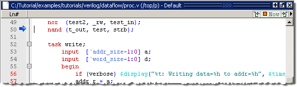
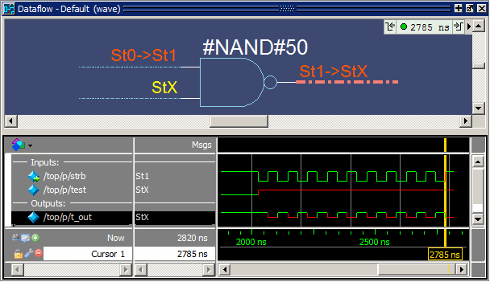
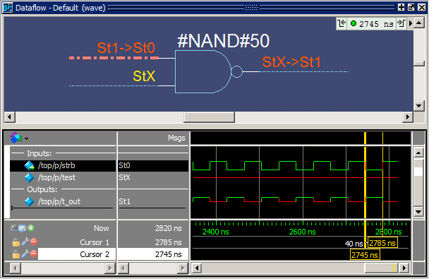
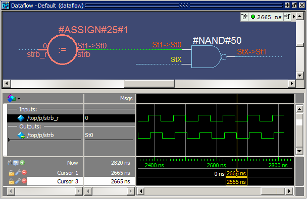

Tracing Events
Another
useful debugging feature is tracing events that contribute to an
unexpected output value. Using the Dataflow window’s embedded Wave Viewer,
you can trace backward from a transition to a process or signal
that caused the unexpected output.
Procedure
- Set
the default behavior to show drivers in the Dataflow window when
double-clicking a signal in the Wave window.
- Click the Wave window tab to make the Wave window active.
- Select This opens the Wave Window Preferences dialog box.
- Select Show Drivers in Dataflow in
the “Double-click will:” menu, then click OK. (Figure 1)Figure 1. Wave Window Preferences Dialog Box
- Add
an object to the Dataflow window.
- Double-click anywhere on the t_out waveform in the Wave window. The Source window will open to show the source code for that signal.
- Click the Dataflow tab to open the Dataflow window.
- Click
the Show Wave icon
 to open the Wave
Viewer if it is not already open. You may need to increase the size
of the Dataflow window to see everything.
to open the Wave
Viewer if it is not already open. You may need to increase the size
of the Dataflow window to see everything. - Click
the #NAND#50 gate to display its inputs and outputs in the Wave
Viewer (Figure 2).Figure 2. The Embedded Wave Viewer
- Trace
the inputs of the nand gate.
- Double-click process #NAND#50 (labeled line_71
in the VHDL version) in the Dataflow Viewer. The active display
jumps to the source code view of the proc.v file
with a blue arrow pointing to the declaration of the NAND gate (Figure 3). Figure 3. Source Code for the NAND Gate
- Click the Dataflow tab to go back to the Dataflow window.
- In the Wave Viewer, scroll to the last transition of signal t_out.
- Click
just to the right of the last transition of signal t_out. The cursor
should snap to time 2785 ns. (Figure 4)Figure 4. Signals Added to the Wave Viewer Automatically
- The
signal t_out in the Dataflow Viewer should be highlighted red. Click
the highlighted signal to make the signal active, then select to trace the first contributing
event.
Questa SIM adds a cursor to the Wave Viewer to mark the last event - the transition of the strobe to St0 at 2745 ns - which caused the output of St1 on t_out (Figure 5).
Figure 5. Cursor in Wave Viewer Marks Last Event - Select two more times and watch the cursor jump to the next event.
- Select .
The Dataflow flow diagram sprouts to the preceding process and shows the input driver of the strb signal (Figure 6). Notice, also, that the Wave Viewer now shows the input and output signals of the newly selected process.
Figure 6. Tracing the Event SetYou can continue tracing events through the design in this manner: select Trace next event until you get to a transition of interest in the Wave Viewer, and then select Trace event set to update the Dataflow flow diagram.
- Double-click process #NAND#50 (labeled line_71
in the VHDL version) in the Dataflow Viewer. The active display
jumps to the source code view of the proc.v file
with a blue arrow pointing to the declaration of the NAND gate (Figure 3).
- When you are finished, select to close the Dataflow window.